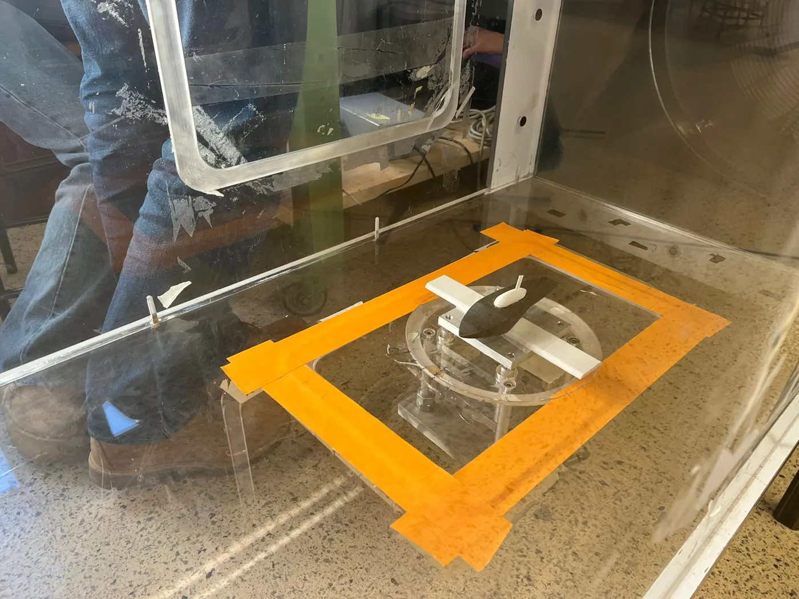
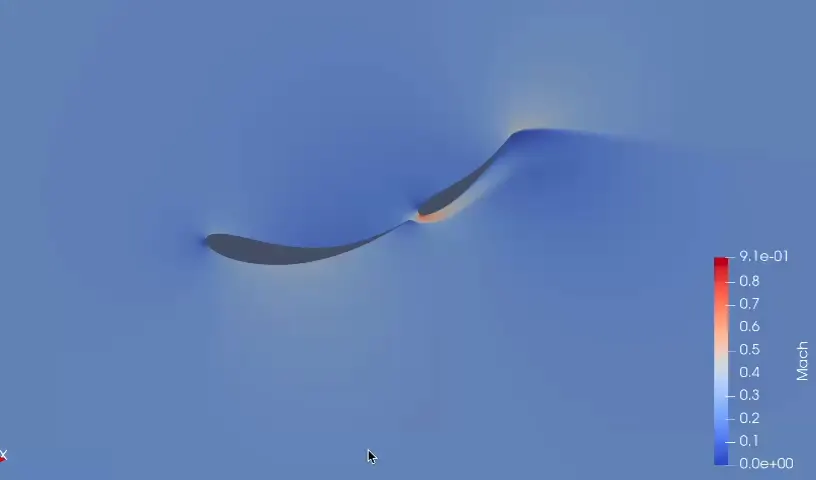
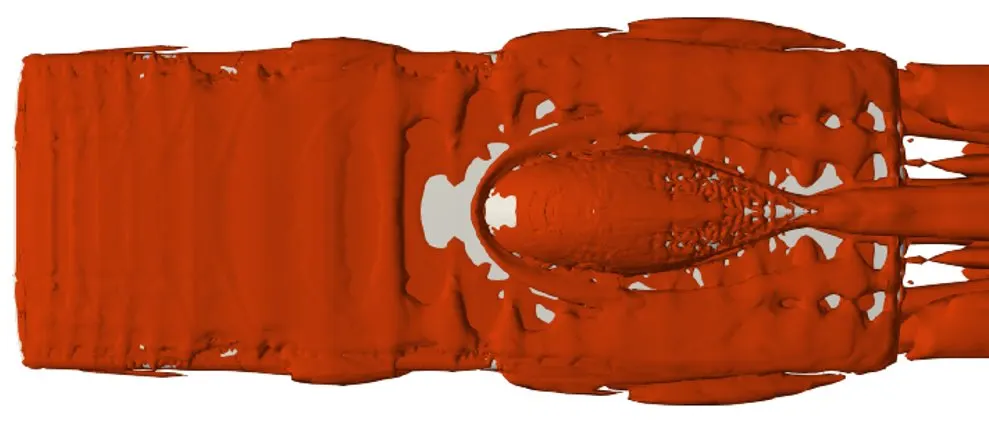

0.11 mm · 4.7%Results you can trustEvery set-up checked before it counts: 0.11 mm against published jet cases, drag within 4.7% of PoliMi wind-tunnel data.
SU2 · OpenFOAM · HPCFrom mesh to answer, on my ownSU2 and OpenFOAM, adaptive meshing, Linux/HPC batch runs and Python post-processing. I hand over answers, not just plots.
5 aircraft · 381 defectsI know real aircraftCertificate of airworthiness renewals for five aircraft, FAA and EASA AD/SB studies, 381 in-service defects analysed.
NL · SG · USA · FRClients trust meCustomer support and sales for companies in the Netherlands, Singapore, the USA and France. Fluent English, French and Arabic, Italian B2.
Solar car aerodynamicsTeam of 4. Four World Solar Challenge designs compared with RANS CFD on 7–8.5 M-cell meshes. My part: the grid convergence study and the 3D-printed model. Wind tunnel: CFD Cd 0.144 vs 0.163 measured. OpenFOAMSOLIDWORKSParaView
 From CFD to the wind tunnelThe 16 cm printed model I prepared and sanded, on the PoliMi force balance. Close to the ground, drag rose 2.4 times. 3D printingForce balance
 2D DRS rear wingTeam of 5. 24 mainplane and flap combinations with the DRS open, Euler and unsteady RANS. RANS set-up within 4.7% of wind-tunnel drag. SU2GmshURANS
 Wake and vortex studyVortex structures behind the solar cars, used to explain where the drag comes from. OpenFOAMParaView
Robust drone controlTeam of 3. Lateral control of a multirotor by dynamic inversion and H∞ mixed sensitivity; robustness checked with 1,000 Monte Carlo runs. MATLABSimulinkMonte Carlo
SpeedySails start-upTeam of 6, graded 29/30. Sail-mounted pressure sensors for real-time trim feedback. Market study, customer interviews (88% positive), visuals and the final pitch. Market researchPitch